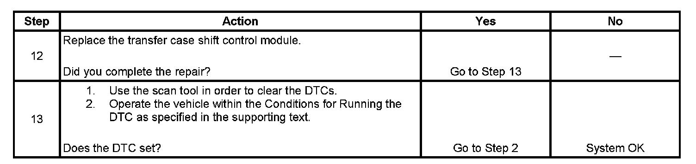

C0379
DTC C0379
Circuit Description
The front axle control circuit consists of an electric motor actuator which engages and disengages the front axle. The front axle actuator motor consists of a permanent magnetic motor, a worm gear controlled plunger, a front axle switch and an electronic control circuit within the actuator assembly.
The front axle actuator consists of the following circuits:
^ The front axle control circuit, which is also connected to the transfer case shift control module
^ The front axle switch circuit, which is also connected to the transfer case shift control module
^ An ignition 3 voltage circuit
^ A ground circuit
When a shift to AUTO 4WD, 4HI, or 4LO is requested, the transfer case shift control module engages the front axle by grounding the front axle control circuit through a current limiting driver.
This DTC detects a short to ground, short to voltage or an open circuit.
DTC Descriptor
This diagnostic procedure supports the following DTC:
DTC C0379 01
Four Wheel Drive Low Range (4LO) Discrete Output Circuit Short to Battery
DTC C0379 06
Four Wheel Drive Low Range (4LO) Discrete Output Circuit Short to Ground or Open
Diagnostic Fault Information
Perform the Diagnostic System Check - Vehicle Initial Inspection and Diagnostic Overview
Conditions for Running the DTC
^ The ignition is ON.
^ The system voltage is 9-18 volts.
Conditions for Setting the DTC
^ The transfer case shift control module monitors the state of the front axle switch. The transfer case shift control module reads back the front axle switch circuit for a high and low voltage. The DTC sets if this circuit is high when a low voltage is present or when the circuit is low when a high voltage is present for 10 seconds.
^ The DTC sets if this circuit is high when a low voltage is present or when the circuit is low when a high voltage is present for 10 seconds.
Action Taken When the DTC Sets
The SERVICE 4WD indicator remains illuminated for the remainder of the current ignition cycle.
Conditions for Clearing the DTC
^ The transfer case shift control module will clear the DTC if the condition for setting the DTC is not currently present.
^ A history DTC will clear after 100 consecutive ignition cycle without a fault present.
^ History DTCs can be cleared using a scan tool.
Test Description
The numbers below refer to the step numbers on the diagnostic table.
2. This step tests the front axle circuit for a current malfunction.
3. This step helps determine if the failure is the result of a short to voltage or ground.
4. This step helps determine if the front axle control circuit is shorted to ground.
5. This step tests the integrity of the front axle switch and the ignition 3 voltage circuits.
6. This step tests the front axle control circuit for short to ground.
7. This step tests the front axle control circuit for short to voltage or ground.
8. This step tests the front axle switch signal circuit for a short to voltage.
9. This step tests the front axle ignition 3 voltage circuit and the front axle switch circuit for an open or short to ground.
10. This step tests the front axle control circuit and the front axle ground circuit for an open or high resistance.
Step 1 - Step 11:
Step 12 - Step 13:
